Sept 2025 — August 2026
PhD Coursework, Electrical and Computer Engineering
FEUP, University of Porto, Portugal · Curricular year completed
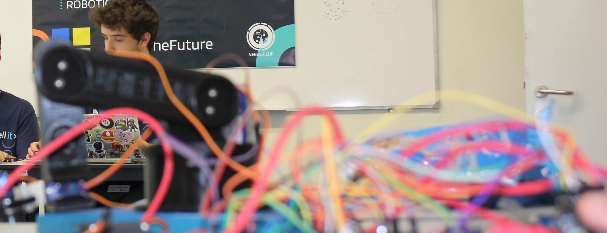
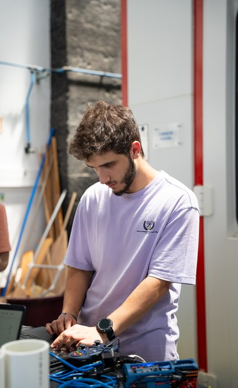
Robotics Engineer — Mobile & Marine Robotics
I'm a robotics engineer and researcher with an MSc in Electrical and Computer Engineering, currently working on autonomous surface vehicle navigation: obstacle detection, motion planning and avoidance. Drawn to mobile robotics by the complexity of the problems, the creativity the solutions demand, and the range of fields it can transform.
Background
FEUP, University of Porto, Portugal · Curricular year completed
Technical University of Munich, Germany
University of Porto, Portugal · GPA 18/20
Dissertation · A Velocity Obstacle Avoidance Algorithm for Heterogeneous Robotic Vehicles · graded 19/20
University of Porto, Portugal · GPA 18/20
Faial, Azores, Portugal · 24 students from MIT and Portuguese universities
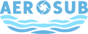
AEROSUB · Horizon Europe · 2024–Present Automated inspection robots for offshore wind — aerial and underwater, combining AI and digital twins.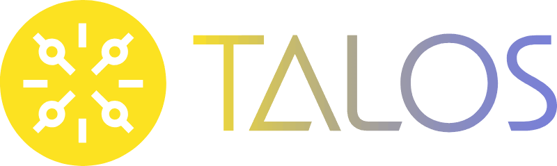
TALOS · Horizon Europe · 2023–Present Robotics and AI living labs for photovoltaic inspection and maintenance.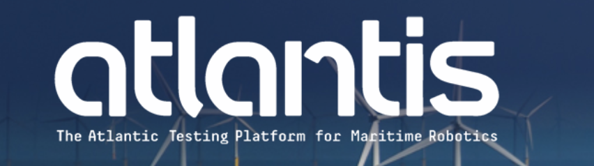
ATLANTIS · Horizon 2020 · 2020–2024 Atlantic testing platform for robotic inspection and maintenance of offshore wind farms.Developed and validated the full navigation stack for the autonomous surface vehicle.
INESC TEC · Project TALOS · 2023 — Present
Developed the ASV navigation pipeline for project TALOS, from motion planning and control, to decision making and UAV coordination.
Motion planning · Decision making · Control system design · Field validation
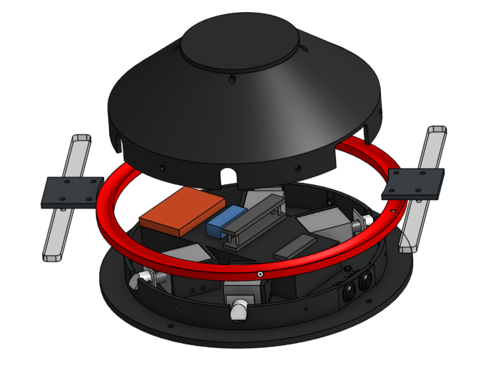
CAD design
INESC TEC · 2023
Developed a prototype for a portable UAV docking and retention system, from conceptualisation and 3D modelling to electronics and communications.
Prototyping · CAD design · Embedded electronics
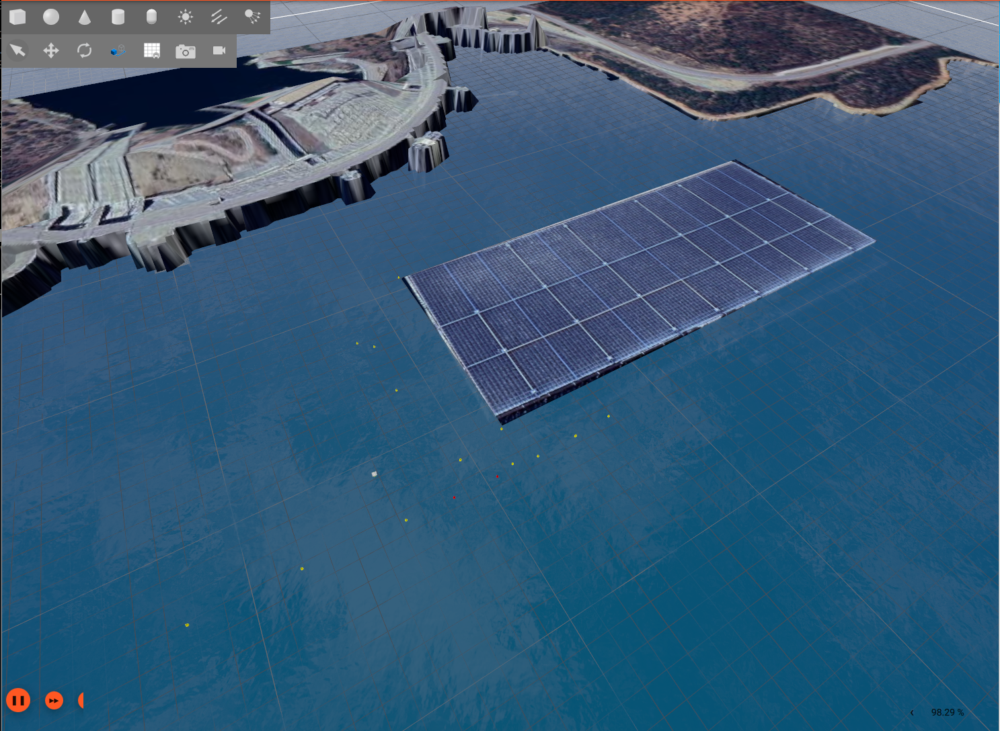
Alqueva Dam Terrain
INESC TEC · Project TALOS · 2023 — Present
Integrated and calibrated wave, current, wind and buoyancy plugins, simulated LiDAR, camera, IMU, GPS and MAVLink teleoperation, and modelled terrain and mission elements, to build a simulation environment for ASV behavioural and motion planning.
Simulation (Gazebo) · Sensor modelling · Physics tuning · ROS 2
Avoiding two static obstacles
MSc Dissertation · FEUP · 2025 · graded 19/20
A velocity obstacle algorithm for dynamic environments, on a 3D representation which allows for heterogeneous kinematics. Tested in simulation for holonomic and differential drive surface vehicles and aerial multirotor UAVs. Validated on water using the NEST ASV.
Velocity obstacles · Motion planning · Obstacle detection and tracking · Field validation
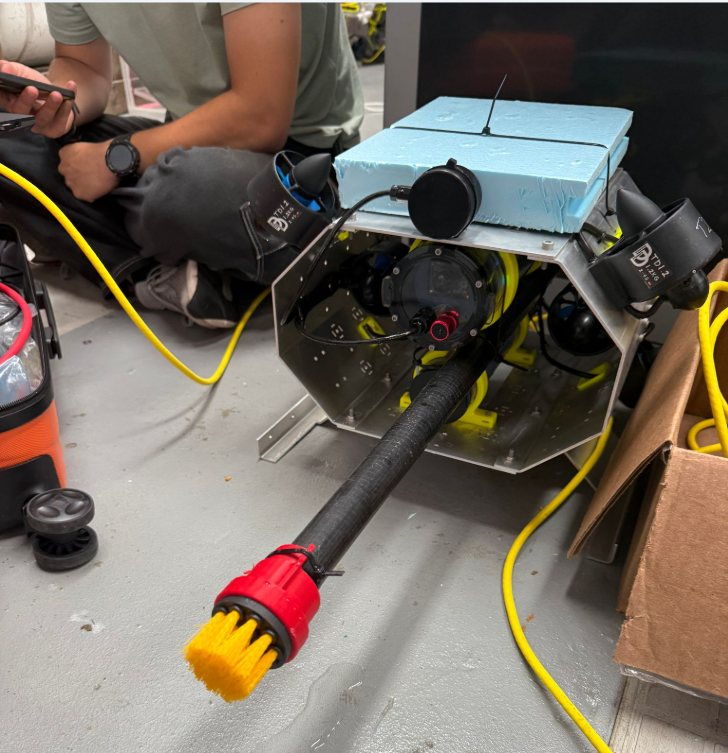
The ROV, equipped with cameras and a brush for sampling and cleaning.
MIT Portugal Marine Robotics Summer School · 2026
Adapted an ROV with custom software and hardware accessories for detecting invasive biofouling species on submerged structures, during a summer school in the Azores with a team of biologists, oceanographers, navy personnel and engineers.
ROV · Marine robotics · Underwater inspection
Personal project · 2026 — Present
Developing a computer vision pipeline for UTAD's Wildlife Rehabilitation Centre's bird flight tunnels, turning camera footage into flight behaviour analysis and recovery detection. Currently being deployed on site.
Object detection · Object tracking · YOLO · Roboflow
Detecting an obstacle with the time-of-flight sensor and going around it.
FEUP · 2023 · Embedded Computing Architectures
Quadruped walking robot on a Raspberry Pi Pico, using an IMU and a time-of-flight sensor for obstacle detection and contour following.
Mobile robotics · Motion planning · Raspberry Pi Pico · C · IMU · ToF
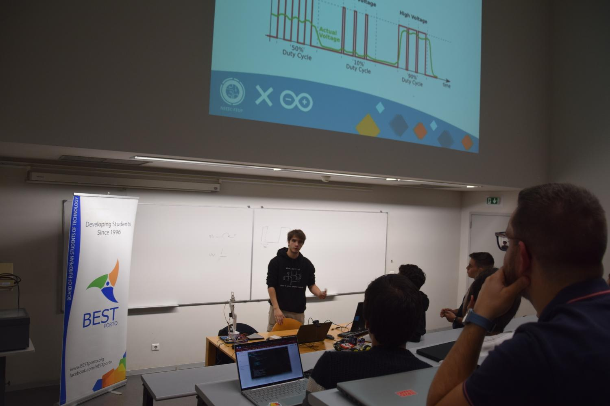
Sept 2020 — Aug 2025
Member from 2020 to 2025 and board member in 2023/2024 — head of the technology department, running technical workshops, high-school outreach, and logistics for the NEEEIL-IT robotics competition.
Team leadership · Event logistics · Workshop design · Public speaking
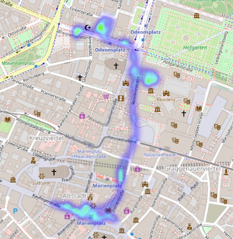
TUM · 2024 · Environmental Sensing and Monitoring
Mobile methane emission survey of the Munich Christmas Markets, mapping concentration against measurement track.
Environmental sensing · Python
NEEEC · 2023 · Mostra U.Porto
A beam that keeps a ball balanced using a servo and a ToF distance sensor. Built as a hands-on control-theory demo for Mostra U.Porto — the University of Porto's open-doors fair, where secondary-school students and the public meet the university's courses and research.
PID control · Arduino · Outreach
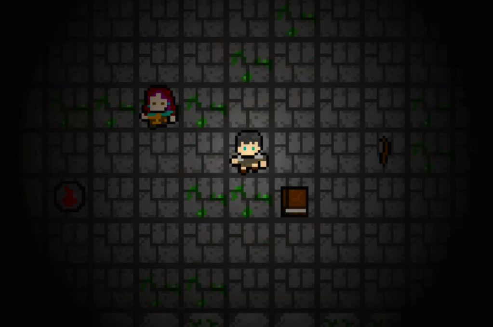
FEUP · 2023 · Software Design
Online multiplayer indie game in Java where two soldiers must cooperate to solve puzzles and escape a dark dungeon.
Java · Client–server networking · Multiplayer · Game design
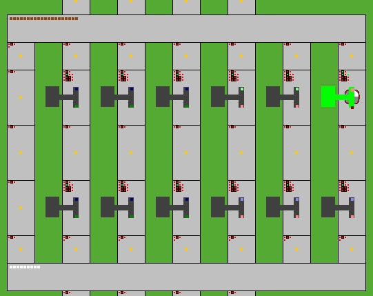
FEUP · 2024 · Industrial Informatics
A 4-layer industrial automation system — ERP, MES, SCADA and PLC — for a production line simulator, built to ISA-95 standards. Designed the scheduling algorithms behind production planning and real-time shop-floor optimisation, and integrated the layers end to end.
ISA-95 · Python · Codesys · Modbus TCP · OPC-UA